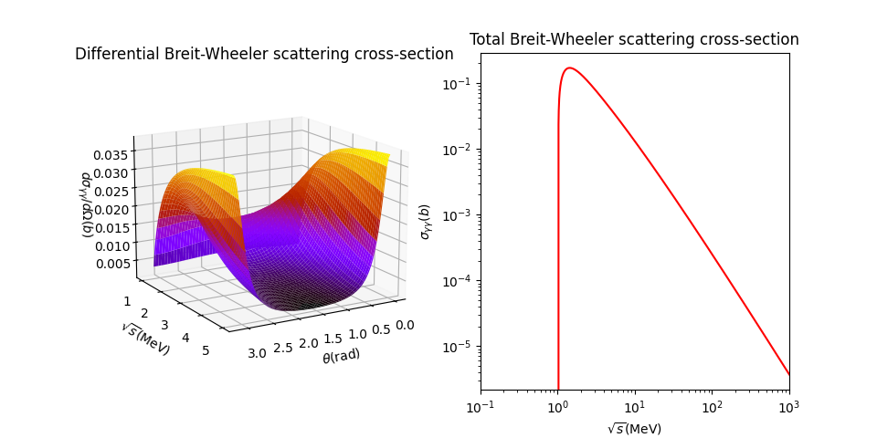
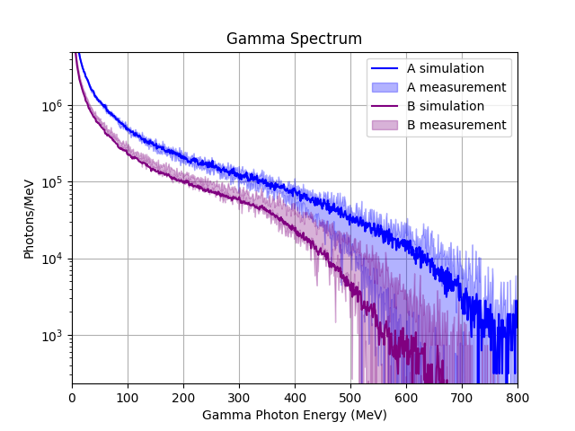
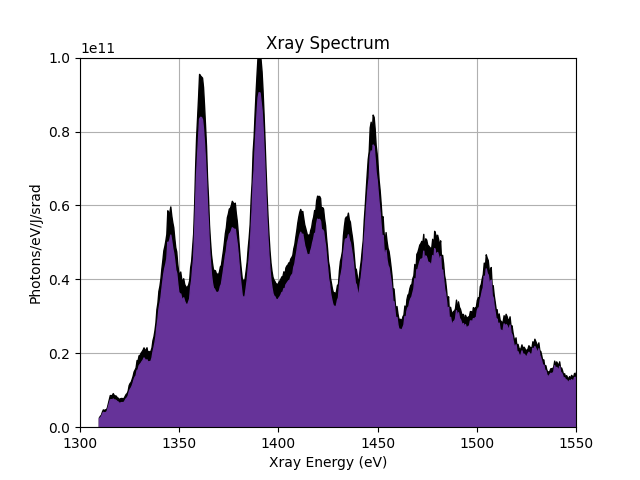

theory package
Module contents
Theory Package
This package contains the values of the 2018 experiment, measurements of the setup, energy spectra of the Xray and Gamma pulses, and the Breit-Wheeler cross-section formula as a Python function.
- Modules:
cross_section: Breit-Wheeler cross section function
values: values from the 2018 experiment
energy_spectra: Xray and Gamma energy spectra and datasets
Example
>>> import numpy as np
>>> import matplotlib.pyplot as plt
>>> from theory.cross_section import c_bw, dc_bw
>>>
>>> # setup figure
>>> fig = plt.figure(figsize=plt.figaspect(0.5))
>>>
>>> ax1 = fig.add_subplot(1, 2, 1, projection='3d')
>>> ax1.view_init(elev=15, azim=60, roll=0)
>>> ax1.set_title('Differential Breit-Wheeler scattering cross-section')
>>> ax1.set_xlabel('$\theta$(rad)')
>>> ax1.set_ylabel('$\sqrt{s}$(MeV)')
>>> ax1.set_zlabel('$d\sigma_{\gamma\gamma}/d\Omega (b)$')
>>>
>>> ax2 = fig.add_subplot(1, 2, 2)
>>> ax2.set_title('Total Breit-Wheeler scattering cross-section')
>>> ax2.set_xlabel('$\sqrt{s}$(MeV)')
>>> ax2.set_ylabel('$\sigma_{\gamma\gamma}(b)$')
>>> ax2.set_xlim(1e-1, 1e3)
>>>
>>> # generate values
>>> theta = np.linspace(0, np.pi, 100)
>>> root_s_differential = np.linspace(1, 5, 100)
>>> theta, root_s_differential = np.meshgrid(theta, root_s_differential) #for array dimensions
>>>
>>> # differential cross section
>>> diff_cross_sec = dc_bw(root_s_differential, theta)
>>>
>>> # total cross section
>>> root_s = np.logspace(0, 3, 1000)
>>> cross_sec = c_bw(root_s)
>>>
>>> # plot values
>>> ax1.plot_surface(theta, root_s_differential, diff_cross_sec, cmap = 'gnuplot')
>>> ax2.loglog(root_s, cross_sec, color='red')
Output:
{kind=link}
theory.cross_section module
Formula for the Breit Wheeler cross-section taken from BKettle et al. A laser-plasma platform for photon-photon physics. 2018. New J. Phys 23 115006 Section 8
Plot_formulae() is to compare with the plots generated by Cary Colgan in his PhD thesis.
- theory.cross_section.c_bw(root_s: list) list[source]
Breit Wheeler total cross section
- Parameters:
root_s (np.ndarray[float]) – centre of mass energy
- Returns:
Breit wheeler total cross section
- Return type:
np.ndarray[float]
- theory.cross_section.dc_bw(root_s: list, theta: list) list[source]
Breit Wheeler differential cross section
- Parameters:
root_s (np.ndarray[float]) – centre of mass energy
theta (np.ndarray[float]) – Collision and scattering angle
- Returns:
differential Briet Wheeler cross section (barns)
- Return type:
np.ndarray[float]
theory.values module
Stores values of common scientific constants in python variables. Stores values of measurements, estimations, and experimental setup parameters taken from the 2018 experiment.
- Physical constants:
e: electronic charge (C)
c: speed of light in vacuum (m/s)
m: electron mass (kg)
re: classical electron radius
- Simulation parameters from 2018:
gamma_length: length of gamma pulse (mm)
gamma_length_err: error in length of gamma pulse (mm)
gamma_radius: radius of gamma pulse (mm)
off_axial_dist: perpendicular distance from gamma pulse to Xray source when directly overhead (mm)
source_angle: angle of the Xray source (degrees)
Xray_FWHM: Full Width Half Maximum of Xray bath (mm)
delay_experiment: Pulse delay used (ps)
xray_number_density: Xray photon number density measured at 1mm from the target (m^-3)
xray_number_density_err: error in the Xray photon number density
gamma_photon_number: number of gamma photons
gamma_photon_number_err: error in the number of gamma photons
AMS_transmission: transmission efficiency of the AMS system
AMS_transmission_err: error in the AMS system transmission efficiency
xray_spectra_min: minimum Xray spectral value as measured by the Xray CCD (eV)
xray_spectra_max: maximum Xray spectral value as measured by the Xray CCD (ev)
- Outdated variables:
gamma_energy: Constant gamma energy required for pair creation (MeV)
xray_energy: Energy of a peak in the Xray spectral distribution (MeV)
Submodules
Energy Spectra Subpackage
This package contains the energy spectra for the Xray and Gamma photon distribution. Contains the datafiles and methods to plot and process data. Includes methods to sample a probability distribution from those energy spectra.
- Modules:
gamma_spectra: gamma spectra after the collimator from the 2018 experiment
xray_spectra: measured Xray spectra with aluminium filter
xray_spectra: measured Xray spectra without aluminium filter, so uncallibrated
Example
>>> import matplotlib.pyplot as plt
>>> from theory.energy_spectra.gamma_spectra import GammaSpectra
>>> from theory.energy_spectra.xray_spectra import XraySpectra
>>>
>>> gamma_data = GammaSpectra('optimisation_simulation/theory/energy_spectra/data/GammaSpectra/Fig4b_GammaSpecLineouts.mat')
>>> xray_data = XraySpectra('optimisation_simulation/theory/energy_spectra/data/XrayBath/XraySpectra/', resolution=0.5)
>>> gamma_data.replicate_plot()
>>> xray_data.replicate_plot()
Output:
 {kind=link}
{kind=link}
theory.energy_spectra.gamma_spectra module
Defines the GammaSpectra class, which reads the gamma pulse’s energy spectral data matlab file, with methods to plot and sample a probability density function based on the data. The data was taken from the 2021 paper’s zenodo records repository. The data was used to plot figures 4b and 5a in the 2021 paper.
- class theory.energy_spectra.gamma_spectra.GammaSpectra(mat_fname: str)[source]
Bases:
objectGamma spectra data set
- matfile
loaded matlab file containing dataset
- Type:
dict
- gamma_energy
energy of gamma photon (MeV)
- Type:
list[float]
- sim_nph_a_mean
mean simulated optimal beam performance
- Type:
list[float]
- sim_nph_a_sigma
error in simulated optimal beam performance
- Type:
list[float]
- sim_nph_b_mean
mean simulated commissioned beam performance
- Type:
list[float]
- sim_nph_b_sigma
error in simulated commissioned beam performance
- Type:
list[float]
- exp_nph_a_mean
mean experimental optimal beam performance
- Type:
list[float]
- exp_nph_a_sigma
error in experimental optimal beam performance
- Type:
list[float]
- exp_nph_b_mean
mean experimental commissioned beam performance
- Type:
list[float]
- exp_nph_b_sigma
error in experimental commissioned beam performance
- Type:
list[float]
- get_exp_nph_a_mean() list[source]
Access method for exp_nph_a_mean
- Returns:
mean number of photons for experimental optimal beam performance
- Return type:
list[float]
- get_exp_nph_a_sigma() list[source]
Access method for exp_nph_a_sigma
- Returns:
standard deviation in the number of photons for experimental optimal beam performance
- Return type:
list[float]
- get_exp_nph_b_mean() list[source]
Access method for exp_nph_mean
- Returns:
mean number of photons for experimental commissioned beam performance
- Return type:
list[float]
- get_exp_nph_b_sigma() list[source]
Access method for exp_nph_b_sigma
- Returns:
standard deviation in the number of photons for experimental commissioned beam performance
- Return type:
list[float]
- get_gamma_energy() list[source]
Access method for gamma_energy
- Returns:
energy of the gamma photons (MeV)
- Return type:
list[float]
- get_matfile() dict[source]
Access method for matfile
- Returns:
data from the gamma spectra which was stored in a matfile
- Return type:
dict
- get_sim_nph_a_mean() list[source]
Access method for sim_nph_a_mean
- Returns:
mean number of photons for simulated optimal beam performance
- Return type:
list[float]
- get_sim_nph_a_sigma() list[source]
Access method for sim_nph_a_sigma
- Returns:
standard deviation in the number of photons for simulated optimal beam performance
- Return type:
list[float]
- get_sim_nph_b_mean() list[source]
Access method for sim_nph_b_mean
- Returns:
mean number of photons for simulated commissioned beam performance
- Return type:
list[float]
theory.energy_spectra.xray_spectra module
Defines the XraySpectra class, which reads the Xray bath’s energy spectral data folder, with methods to plot and sample a probability density function based on the data. The data was taken from the 2018 paper’s zenodo records repository. The data was used to plot figures 4b and 5a in the 2018 paper.
- class theory.energy_spectra.xray_spectra.XraySpectra(file_dir: str, resolution=0.5)[source]
Bases:
objectXray spectra data set .. attribute:: file_dir
file directory address containing the pickled xray spectra files.
- type:
string
- file_list
list of filenames within the directory specified.
- Type:
list[str]
- resolution
resolution of xray energy bins for averaging over data sets (eV)
- Type:
float
- energy
all energy values from all datafiles
- Type:
list[float]
- nph
all values of number of photons/eV/J/srad from all data files, corresponds to energy value
- Type:
list[float]
- nph_err
standard deviation of number of photons/eV/J/srad from all data files
- Type:
list[float]
- avg_energy
bin energies (centre of bin values)
- Type:
list[float]
- avg_nph
bin-average photon count
- Type:
list[float]
- avg_nph_err
bin-summed photon count standard deviation
- Type:
list[float]
- bin_data(x: list, y: list, bin_width=0.5, err=False) tuple[source]
Bins arrays of x and y data points and averages y values in bins
- Parameters:
x (list[float]) – list of x data points
y (list[float]) – list of y data points
bin_width (float, optional) – resolution of bins. Defaults to 0.5.
err (bool, optional) – True if handling uncertainties. Defaults to False
- Returns:
- Tuple containing:
list[float]: bin centre coordinates
list[float]: height of bins
- Return type:
tuple[list[float], list[float]]
- filter_energies(min_energy: float, max_energy: float)[source]
Filters energies between the 1.3-1.5keV energy range
- Parameters:
min_energy (float) – minimum energy (eV)
max_energy (float) – maximum energy (eV)
- get_avg_energy() list[source]
Access method for avg_energy
- Returns:
bin energies (centre of bin values)
- Return type:
list[float]
- get_avg_nph() list[source]
Access method for avg_nph
- Returns:
bin-average photon count
- Return type:
list[float]
- get_avg_nph_err() list[source]
Access method for avg_nph_err
- Returns:
bin-summed photon count standard deviation
- Return type:
list[float]
- get_data() tuple[source]
Obtains and combines data from all datasets
- Returns:
- Tuple containing:
list[float]: compiled energy data
list[float]: compiled number of photons data
list[float]: compiled number of photons error data
- Return type:
tuple[list[float]]
- get_energy() list[source]
Access method for energy
- Returns:
all energy values from all datafiles
- Return type:
list[float]
- get_file_dir() str[source]
Access method for file_dir
- Returns:
file directory address containing the pickled xray spectra files
- Return type:
str
- get_file_list() list[source]
Access method for file_list
- Returns:
list of filenames within the directory specified
- Return type:
list[str]
- get_nph() list[source]
Access method for nph
- Returns:
all values of number of photons/eV/J/srad from all data files, corresponds to energy value
- Return type:
list[float]
- get_nph_err() list[source]
Access method for nph_err
- Returns:
standard deviation of number of photons/eV/J/srad from all data files
- Return type:
list[float]
- get_resolution() float[source]
Access method for file_list
- Returns:
resolution of xray energy bins for averaging over data sets (eV)
- Return type:
float
- sample_pdf(min_energy: float, max_energy: float, n: int) list[source]
Generates discrete probability distribution and returns a sample of energies
- Parameters:
min_energy (float) – minimum xray energy (eV)
max_energy (float) – maximum xray energy (eV)
n (int) – number of samples to take
- Returns:
sampled xray energies
- Return type:
list[float]
theory.energy_spectra.xray_spectra_Ge module
Defines the XraySpectraGe class. Reads Ge_spectrum.csv with methods to plot and sample a probability density function based on the data. The data was given by Rose Steven. This in an Xray spectra dataset measured without the Aluminium filter.
- class theory.energy_spectra.xray_spectra_Ge.XraySpectraGe(datafile: str)[source]
Bases:
objectGermanium Xray spectra data set
- filename
location of the datafile
- Type:
str
- energy
list of Xray photon energies
- Type:
list[float]
- flux
flux of the corresponding Xray photon energy
- Type:
list[float]
- get_data() tuple[source]
Reads the Xray spectrum datafile (.csv)
- Returns:
- Tuple containing:
list[float]: list of Xray photon energies
list[float]: flux of the corresponding Xray photon energy
- Return type:
tuple
- get_energy() list[source]
Access method for energy
- Returns:
list of Xray photon energies
- Return type:
list[float]
- get_filename() str[source]
Access method for filename
- Returns:
location of the datafile
- Return type:
str
- get_flux() list[source]
Access method for flux
- Returns:
flux of the corresponding Xray photon energy
- Return type:
list[float]